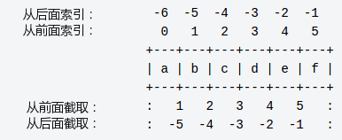
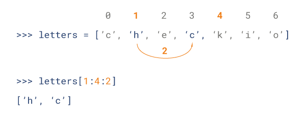

Python 変数の型
変数はメモリに保存される値です。つまり、変数を作成するときにメモリ内に領域を確保します。
変数のデータ型に基づいて、インタプリタは指定されたメモリを割り当て、メモリに保存できるデータを決定します。
したがって、変数には異なるデータ型を指定でき、これらの変数には整数、小数、または文字を格納できます。
変数の代入
Python での変数の代入には型宣言は必要ありません。
各変数はメモリ内に作成され、変数の識別子、名前、データなどの情報が含まれます。
各変数は使用前に代入する必要があり、変数を代入して初めてその変数が作成されます。
等号=変数に値を代入するために使用します。
等号=演算子の左側は変数名で、等号=演算子の右側は変数に格納される値です。例：
例(Python 2.0+)
例を実行 »
上記の例では、100、1000.0、"John" がそれぞれ counter、miles、name 変数に代入されています。
上記のプログラムを実行すると、次の結果が出力されます：
100 1000.0 John
複数の変数の代入
Python では、複数の変数に同時に代入できます。例：
a = b = c = 1
上記の例では、値が 1 の整数オブジェクトを作成し、3 つの変数が同じメモリ空間に割り当てられます。
複数のオブジェクトに複数の変数を指定することもできます。例：
a, b, c = 1, 2, "john"
上記の例では、2 つの整数オブジェクト 1 と 2 がそれぞれ変数 a と b に割り当てられ、文字列オブジェクト "john" が変数 c に割り当てられます。
標準データ型
メモリに格納されるデータにはさまざまな型があります。
たとえば、人の年齢は数値で、名前は文字で格納できます。
Python には、さまざまな型のデータを格納するための標準型がいくつか定義されています。
Python には 5 つの標準データ型があります：
- Numbers（数値）
- String（文字列）
- List（リスト）
- Tuple（タプル）
- Dictionary（辞書）
Python 数値
数値データ型は数値を格納するために使用されます。
それらは不変のデータ型です。つまり、数値データ型を変更すると新しいオブジェクトが割り当てられます。
値を指定すると、Number オブジェクトが作成されます：
var1 = 1 var2 = 10
del 文を使用して、いくつかのオブジェクトの参照を削除することもできます。
del 文の構文は次のとおりです：
del var1[,var2[,var3[....,varN]]]
del 文を使用すると、単一または複数のオブジェクトの参照を削除できます。例：
del var del var_a, var_b
Python は 4 つの異なる数値型をサポートしています：
- int（符号付き整数型）
- long（長整数型。8 進数と 16 進数も表せます）
- float（浮動小数点型）
- complex（複素数）
いくつかの数値型の例：
| int | long | float | complex |
|---|---|---|---|
| 10 | 51924361L | 0.0 | 3.14j |
| 100 | -0x19323L | 15.20 | 45.j |
| -786 | 0122L | -21.9 | 9.322e-36j |
| 080 | 0xDEFABCECBDAECBFBAEl | 32.3e+18 | .876j |
| -0490 | 535633629843L | -90. | -.6545+0J |
| -0x260 | -052318172735L | -32.54e100 | 3e+26J |
| 0x69 | -4721885298529L | 70.2E-12 | 4.53e-7j |
- 長整数型には小文字の l も使用できますが、数字の 1 と混同しないように、大文字の L を使用することをお勧めします。Python は長整数型を表示するために L を使用します。
- Python は複素数もサポートしています。複素数は実数部と虚数部で構成され、a + bj または complex(a,b) で表せます。複素数の実部 a と虚部 b はともに浮動小数点型です。
注意：long 型は Python2.X バージョンにのみ存在します。2.2 以降のバージョンでは、int 型データがオーバーフローすると自動的に long 型に変換されます。Python3.X バージョンでは long 型は削除され、int に置き換えられました。
Python 文字列
文字列（String）は、数字、文字、アンダースコアで構成される一連の文字です。
一般的には次のように記述します：
s = "a1a2···an" # n>=0
これはプログラミング言語でテキストを表すデータ型です。
python の文字列リストには 2 つのインデックス指定方法があります：
- 左から右へのインデックスはデフォルトで 0 から始まり、最大範囲は文字列の長さから 1 を引いたものです。
- 右から左へのインデックスはデフォルトで -1 から始まり、最大範囲は文字列の先頭です。

文字列から部分文字列を取得する場合は、次を使用できます：[開始インデックス:終了インデックス]対応する文字列を切り出します。インデックスは 0 から始まり、正または負の数を指定できます。インデックスを空にすると、先頭または末尾まで取得します。
[開始インデックス:終了インデックス]取得される部分文字列には開始インデックスの文字は含まれますが、終了インデックスの文字は含まれません。
例：
>>> s = 'abcdef' >>> s[1:5] 'bcde'
コロンで区切られた文字列を使用すると、python は新しいオブジェクトを返します。結果には、このオフセットのペアで識別される連続した内容が含まれ、左側の開始は下限を含みます。
上記の結果にはs[1]の値 b が含まれ、取得される最大範囲には終了インデックス、つまりs[5]の値 f は含まれません。

プラス記号（+）は文字列連結演算子で、アスタリスク（*）は繰り返し操作です。次の例を参照してください：
例(Python 2.0+)
上記の例の出力結果：
Hello World! H llo llo World! Hello World!Hello World! Hello World!TEST
Python リスト
List（リスト）は Python で最も頻繁に使用されるデータ型です。
リストは、ほとんどのコレクション系データ構造の実装を実現できます。文字、数値、文字列をサポートし、リスト（つまりネスト）を含めることもできます。
リストは[ ]で識別され、python で最も汎用的な複合データ型です。
リスト内の値のスライスには、変数[開始インデックス:終了インデックス]を使用して対応するリストを切り出すことができます。左から右へのインデックスはデフォルトで 0 から始まり、右から左へのインデックスはデフォルトで -1 から始まります。インデックスを空にすると、先頭または末尾まで取得します。

プラス記号+はリスト連結演算子で、アスタリスク*は繰り返し操作です。次の例を参照してください：
例(Python 2.0+)
上記の例の出力結果：
['runoob', 786, 2.23, 'john', 70.2] runoob [786, 2.23] [2.23, 'john', 70.2] [123, 'john', 123, 'john'] ['runoob', 786, 2.23, 'john', 70.2, 123, 'john']
Python のリストスライスは 3 番目のパラメータを受け取ることができます。このパラメータはスライスのステップ幅です。次の例では、インデックス 1 からインデックス 4 の位置で、ステップ幅を 2（1 つ間隔）に設定して文字列を切り出します：

Python タプル
タプルはもう 1 つのデータ型で、List（リスト）に似ています。
タプルは()で識別されます。内部の要素はカンマで区切られます。ただし、タプルは再代入できないため、読み取り専用リストに相当します。
例(Python 2.0+)
上記の例の出力結果：
('runoob', 786, 2.23, 'john', 70.2)
runoob
(786, 2.23)
(2.23, 'john', 70.2)
(123, 'john', 123, 'john')
('runoob', 786, 2.23, 'john', 70.2, 123, 'john')
以下のタプルに対する操作は無効です。タプルは更新が許可されていませんが、リストは更新が許可されているためです：
例(Python 2.0+)
タプルは更新が許可されていないため、上記のコードはエラーになります。結果は次のとおりです：
Traceback (most recent call last):
File "test.py", line 6, in <module>
tuple[2] = 1000 # 元组中是非法应用
TypeError: 'tuple' object does not support item assignment
Python 辞書
ディクショナリ(dictionary)は、リスト以外でPythonにおいて最も柔軟な組み込みデータ構造タイプです。リストは順序付けられたオブジェクトの集合であり、ディクショナリは順序付けられていないオブジェクトの集合です。
両者の違いは、ディクショナリ内の要素はキーによってアクセスされ、オフセットによってアクセスされるわけではないことです。
ディクショナリは「{ }」で識別されます。ディクショナリはインデックス(key)とそれに対応する値valueから構成されます。
例(Python 2.0+)
出力結果は次のとおりです：
This is one
This is two
{'dept': 'sales', 'code': 6734, 'name': 'runoob'}
['dept', 'code', 'name']
['sales', 6734, 'runoob']
Python データ型変換
時には、データの組み込み型を変換する必要があります。データ型の変換は、データ型を関数名として使うだけで済みます。
以下のいくつかの組み込み関数は、データ型間の変換を実行できます。これらの関数は、変換された値を表す新しいオブジェクトを返します。
| 関数 | 説明 |
|---|---|
|
xを整数に変換します |
|
|
xを長整数に変換します |
|
|
xを浮動小数点数に変換します |
|
|
複素数を作成します |
|
|
オブジェクトxを文字列に変換します |
|
|
オブジェクトxを式文字列に変換します |
|
|
文字列内の有効なPython式を評価して、オブジェクトを返します |
|
|
シーケンスsをタプルに変換します |
|
|
シーケンスsをリストに変換します |
|
|
可変集合に変換します |
|
|
ディクショナリを作成します。dは(key,value)タプルのシーケンスである必要があります。 |
|
|
不変集合に変換します |
|
|
整数を文字に変換します |
|
|
整数をUnicode文字に変換します |
|
|
文字をその整数値に変換します |
|
|
整数を16進数の文字列に変換します |
|
|
整数を8進数の文字列に変換します |
赵琪
169***3273@qq.com
変数への代入は単純明快で型の宣言が不要、柔軟で変化に富み、とても使いやすいです。
数値データ型は変更不可能なデータ型であり、数値データ型を変更すると新しいオブジェクトが割り当てられます。
文字列の操作には基本的な機能があり、自分で連結や走査の操作を行う必要はありません。
リストは「[ ]」で識別され、C言語の配列に似ています。
タプルは「( )」で識別されます。内部の要素はカンマで区切られます。ただし、タプルは再代入ができず、読み取り専用リストに相当します。
ディクショナリは「{ }」で識別されます。ディクショナリはインデックスkeyとそれに対応する値valueから構成されます。
赵琪
169***3273@qq.com
唐
454***373@qq.com
変数の代入
文字列の代入
リストの代入
タプルの代入
tuple = ('this', 'is', 'tuple', 3)ディクショナリの代入
dict = {1:'this', 2:'is', 3:'dictionary', 4:4}唐
454***373@qq.com
tuister
tui***r@foxmail.com
Pythonのすべてのデータ型はクラスであり、type() によってその変数のデータ型を確認できます：
さらに isinstance を使って判定することもできます：
isinstance と type の違いは次のとおりです：
違いは次のとおりです：
tuister
tui***r@foxmail.com
流浪猴子
122***6850@qq.com
データ型は数値型と非数値型に分けられます。
数値型には、整数型、長整数型、浮動小数点型、複素数型が含まれます；
非数値型には、文字列、リスト、タプル、ディクショナリが含まれます；
非数値型の共通点：すべてスライス、連結（+）、繰り返し（*）、値の取得（a[]）などの関連演算を使用できます；
非数値型の相違点：
リストは直接代入でき、タプルは代入できず、ディクショナリは次のdict[k]=vの方法で代入します。
流浪猴子
122***6850@qq.com
python.熊
767***386@qq.com
python.熊
767***386@qq.com
sunny想学python
139***38053@163.com
Python変数の型：
（1）Numbers
（2）String
（3）List []
（4）Tuple（タプル）()、読み取り専用リストに相当し、再代入はできません
（5）dictionary（ディクショナリ）{}、キーと値のペア
sunny想学python
139***38053@163.com
gu
413***461@qq.com
参考URL
出力結果は〜ではありません[2] 是 [1]。
ここでは、Pythonの代入が参照なのかコピーなのかという問題、つまり代入時に値渡しなのか参照渡しなのかという問題に関わります。上記の問題は、"a"の値をstrに代入したことで上記の状況が発生したものです。
詳細な分析は以下を参照してくださいPythonにおける変数代入時の参照とコピー
gu
413***461@qq.com
参考URL
643162368
643***368@qq.com
str() と repr() の使用上の違い
1.文字列型の変換について、repr() メソッドは外側に引用符を追加します。この特性は eval() 操作のときに特に役立ちます。
例：
>>> s = 'abdcf' >>> eval('['+','.join([repr(i) for i in s])+']') ['a', 'b', 'd', 'c', 'f']エラーの原因： 当 ','.join([str(i) for i in s])連結後の結果 'a,b,d,c,f' は引用符が1層だけで、eval を実行するとこの引用符が取り除かれ、a,b,d,c,f になります。インタプリタはこれを変数として扱いますが、そのような変数は定義されていないため、NameError エラーが発生します。
2.コンソール出力時はデフォルトで repr() が呼び出され、print() 出力では str が呼び出されます。
643162368
643***368@qq.com
clear_rain
cle***rain@163.com
使用を推奨しませんtype(instance) == classデータ型の判定に使用します：
class A: pass class C(A): pass a = A() c = C() print type(a) == A, print type(c) == C, print type(A()) == A, print type(C()) == C # False False False False print a.__class__ is A, print c.__class__ is A, print a.__class__ is C, print c.__class__ is C # True False False True print isinstance(a, A), print isinstance(c, A), print isinstance(a, C), print isinstance(c, C) # True True False Trueわかるようにtype(instance) == class常に等しいFalse。
而 instance.__class__ is classそのクラス自身であるかを正確に判定できます。
isinstance(instance, class)インスタンスが特定のクラスまたはそのサブクラスであるかを判定できます。
もちろん、Aクラスを新形式クラスから継承させることもできますobject：
その場合、新しい結果は次のようになります：
違いは、type(instance) == class が正常に機能するようになることですが、なぜ isinstance や __class__ is のようなより高速な方法を使わないのでしょうか。アドレス比較は常に値比較より高速です。
clear_rain
cle***rain@163.com